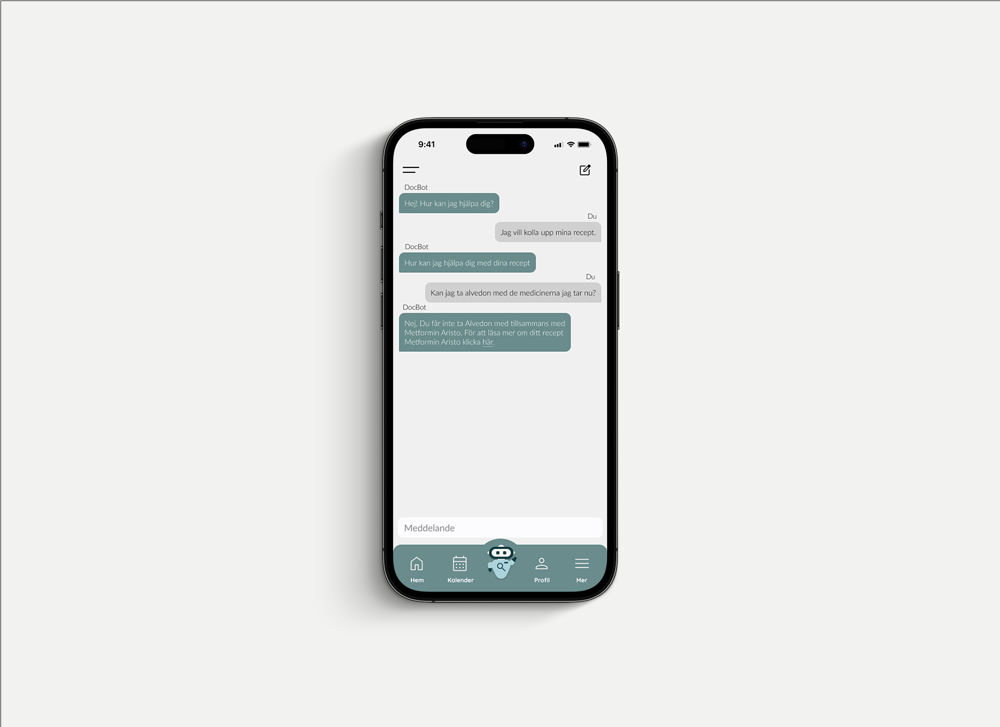
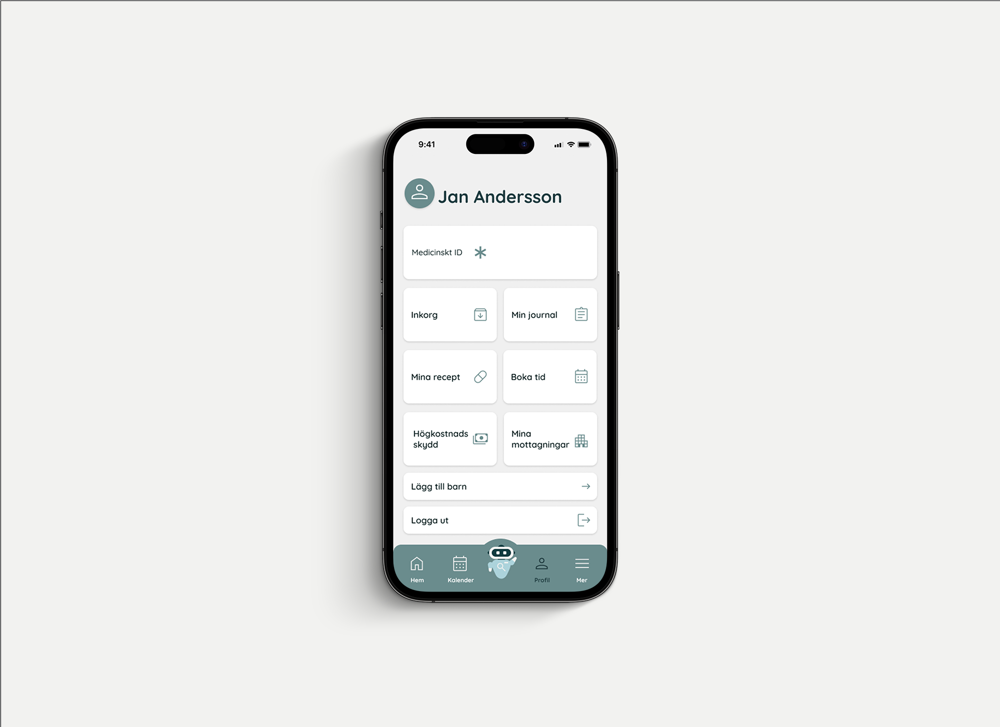
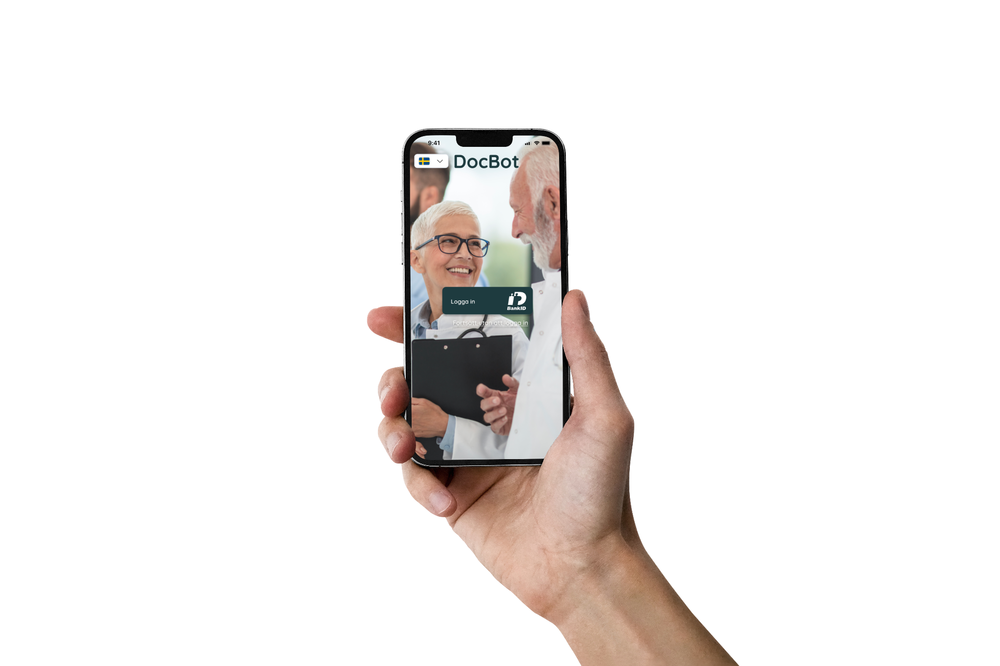

Interaction design · 2023 · 8 weeks
← Back to selected workDocBot
A unified healthcare app concept designed to make Sweden’s fragmented medical services and information easier to understand and access.
A conversational assistant, clear hierarchy and one trusted home for the next step.

Overview
One clear place for healthcare.
For this university project, our team was asked to create a functional app prototype. We chose to rethink the Swedish digital healthcare experience by bringing appointments, prescriptions, medical records, messages and reliable health information together in one place.
DocBot acts as a guide through that system. Its conversational assistant helps users find the right information and understand their next step, while the main interface keeps essential healthcare services close at hand. The concept focused on clarity, accessibility and reducing the effort required to navigate several separate services.
- Project type
- Interaction Design
- Context
- University project
- Team
- 5 people
- Duration
- 8 weeks
- Tools
- Figma, Photoshop
- Focus
- UX, UI and functional prototyping
Prototype
The experience in one clear path.
A focused prototype showing the core navigation, healthcare overview and DocBot assistant.
A calmer route through a complex system.
The prototype brings the essential services into a single rhythm: orient, ask, understand and act. Clear hierarchy keeps the next step visible without asking the user to learn a new mental model.
Interface
Core screens.
The interface uses calm colours, clear hierarchy and familiar patterns to make medical information feel manageable.


Entry point
Familiar and secure.
Trust starts before the first question is asked.
The login concept uses established Swedish conventions such as language selection and BankID, helping the experience feel trustworthy from the first interaction.
